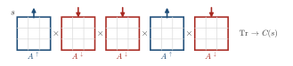
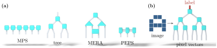

Advanced Quantum Materials 2027 · All lectures · Lecture notes
Session 10. Machine Learning Quantum Materials
10.4 Tensor networks for machine learning and the many-body wavefunction as a big-data problem
We now follow the logic of the previous section in the reverse direction. Instead of using a machine-learning architecture to solve a many-body problem, we treat the many-body wavefunction itself as a big-data problem. Then we use a many-body compression technique, which is tensor networks, as a machine-learning architecture.
Let us recall the matrix product state (MPS) ansatz, which we built in Section 7.4. Instead of storing all the \(2^L\) coefficients of (10.2) independently, we assume that they factorize into a product of matrices, one for each site,
\[C(s_1,\dots,s_L) = \mathrm{Tr}\left[A^{s_1} A^{s_2}\cdots A^{s_L}\right], \tag{10.6}\]
where for each physical value of \(s_i\), for example spin up or spin down, there is a different \(D\times D\) matrix \(A^{s_i}\). The size \(D\), which is called the bond dimension, is a free parameter that we choose. The number of free parameters in (10.6) scales as \(L \times d \times D^2\), with \(d\) the dimension of the local Hilbert space, so it is linear in the system size and not exponential, as Schematic 10.4 shows for one configuration. This is the same compression idea as the NNQS of Section 10.3, but the parameters are matrix elements instead of network weights. The same compression can be generalized beyond the one-dimensional geometry of the MPS. A tree tensor network puts the same matrices in a tree instead of a chain. The multiscale entanglement renormalization ansatz (MERA) adds extra layers of coarse-graining on top of a tree structure. Projected entangled pair states (PEPS) generalize the whole construction to a two-dimensional grid, and Section 7.11 gives both MERA and PEPS. For a ground-state search these architectures are not equivalent, since an MPS is much easier to optimize than a PEPS. This is the reason why MPS works well for one-dimensional problems, while two-dimensional problems are often still hard. However, if we only want a flexible function of a high-dimensional input with an efficient parameterization, as in machine learning, the difference between the architectures matters much less, and any of them can be used.

This is a direct reuse of the architectures of Session 7, and not only an analogy. The same matrix product states, tree tensor networks, MERA and PEPS that we built there to compress ground-state wavefunctions are used here without change as function approximators. This approach has a name, which is “quantum-many-body-inspired machine learning,” and a clear example of it is image classification with tensor networks. We map each pixel of an image with \(N\) pixels to a two-dimensional vector, for example white \(\to\) spin up and black \(\to\) some other reference direction. Then we take the tensor product of all the \(N\) pixel vectors, which gives a single vector in a \(2^N\)-dimensional space. This is the same exponentially large space where a many-body wavefunction with \(N\) spins lives. The classification task then becomes the search for a linear operator on this \(2^N\)-dimensional space that maps each image to its one-hot label. A tensor network, and here a tree tensor network works well, is the efficient and structured parameterization of such a linear operator that (10.6) and its generalizations already gave us. We apply the tensor network to the tensor-product image, and then a final small tensor that projects down to two output numbers. This gives the same structure as the classification of cats and dogs in Section 10.2. Now the worked example is purse versus shirt, and the tensor product of the pixels takes the place of the flattened input matrix. Figure 10.3 shows the four geometries as tensor diagrams, and then the classifier built from one of them.

A matrix product state of (10.6) has \(L=100\) sites, \(d=2\) and bond dimension \(D=10\). How many parameters does it have?
Show the answers
- A. ✗ False
This is false. The number \(2^{100}\approx1.3\times10^{30}\) is the full table. The MPS with \(D=10\) has only \(20000\) numbers, which is \(26\) orders of magnitude less.
- B. ✓ True
This is true. Each of the \(100\) sites has \(d=2\) matrices of size \(10\times10\), which gives \(100\times2\times100=20000\). The count is linear in \(L\) and quadratic in \(D\).
- C. ✗ False
This is false. The count \(L\,d=200\) is the case \(D=1\), which is a product state. It cannot describe an entangled state such as the singlet of two spins, which needs \(D=2\).
Which statement about the classifier of Figure 10.3b is correct?
Show the answers
- A. ✗ False
This is false. There is no activation function in the contraction. Replacing the feature vector \(\varphi(x_i)\) of one pixel by \(2\varphi(x_i)\) multiplies the output by \(2\) exactly, so it is multilinear.
- B. ✓ True
This is true. The output is a contraction of the weights with the tensor product of the pixels, so it is linear in it. The tree tensor network writes this map with few parameters.
- C. ✗ False
This is false. For \(N=100\) pixels, \(2^N\approx10^{30}\) parameters would not fit in any computer. A tree network of bond dimension \(10\) has only about \(10^4\) to \(10^5\) parameters.
This is not a toy result. On the Fashion-MNIST dataset, which is a standard benchmark of images of clothes, this tensor-network classifier reaches 95.38% accuracy on the training set and 88.97% on the test set. This is comparable with conventional neural network architectures on the same task. The general point is the same as in Section 10.3, in the other direction. A variational architecture that was built to compress many-body wavefunctions is, in mathematical terms, one more kind of neural network, and we can use it directly as one.